📋 לפני שמתחילים – מה צריך להכין
- מחשב Windows עם מערכת 64 ביט (בשלב 1 נבדוק את זה ביחד).
- מחשב Mac עם גרסת macOS עדכנית (בשלב 1 נבדוק את זה ביחד).
- חיבור אינטרנט יציב – התוכנה שוקלת כמה ג'יגה-בייט.
- כתובת מייל פעילה שאתם יכולים להיכנס אליה עכשיו (עדיף המייל של בית הספר).
- אישור לימודים או תעודת תלמיד – צילום או קובץ PDF. צריך להופיע בו: השם שלכם, שם בית הספר ותאריך מהשנה הנוכחית. אפשר לבקש אותו ממזכירות בית הספר.
- הרשאת מנהל במחשב (אם המחשב של ההורים – בקשו מהם לאשר את ההתקנה).
- הסיסמה של המק (זו שפותחים איתה את המחשב) – תצטרכו אותה בזמן ההתקנה.
בדיקה שהמחשב מתאים
לפני שמורידים, בודקים שהמחשב יכול להריץ את התוכנה:
- לחצו על מקשי ⊞ Win + I ביחד – ייפתח חלון הגדרות (Settings).
- לחצו על מערכת (System) ואז גללו למטה ולחצו על אודות (About).
- בדקו את הנתונים המסומנים בתמונה:

| # | מה בודקים | מינימום | מומלץ |
|---|---|---|---|
| 1 | זיכרון (Installed RAM) | 8 GB | 16 GB ומעלה |
| 2 | סוג מערכת (System type) | חייב להיות 64-bit | |
| 3 | גרסת Windows (Edition) | Windows 10 או Windows 11 | |
| – | מקום פנוי בכונן C | 10 GB | 20 GB ומעלה |
| – | רזולוציית מסך | 1920×1080 | – |
לפני שמורידים, בודקים שהמק יכול להריץ את התוכנה:
- לחצו על סמל התפוח 🍎 (Apple) בפינה השמאלית העליונה של המסך.
- בחרו About This Mac (אודות Mac זה).
- בדקו את הנתונים המסומנים בתמונה:
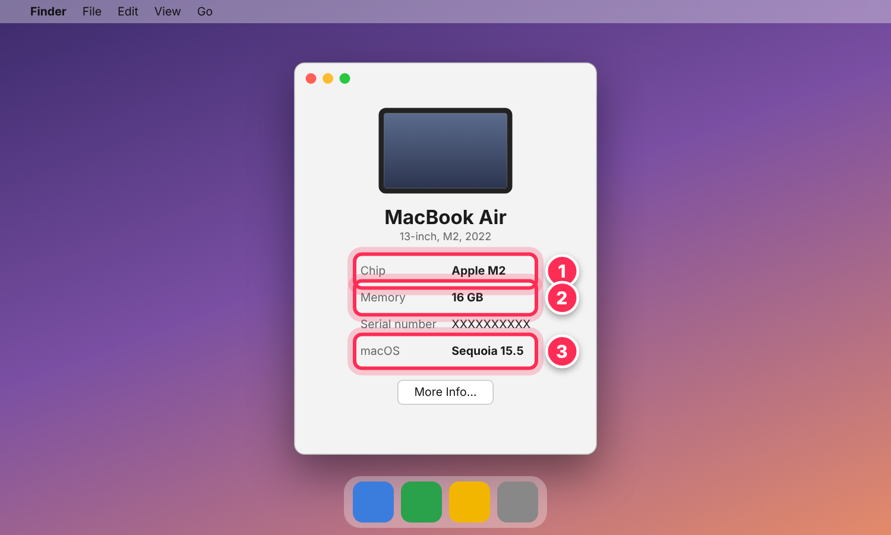
| # | מה בודקים | מינימום | מומלץ |
|---|---|---|---|
| 1 | שבב (Chip / Processor) | Apple M1/M2/M3/M4 או Intel – שניהם עובדים | |
| 2 | זיכרון (Memory) | 8 GB | 16 GB ומעלה |
| 3 | גרסת macOS | אחת משלוש הגרסאות האחרונות (למשל Sonoma, Sequoia או חדשה יותר). אם הגרסה ישנה – עדכנו קודם ב-System Settings ← General ← Software Update | |
| – | מקום פנוי | 10 GB | 20 GB ומעלה |
כניסה לאתר החינוך של Autodesk
- פתחו דפדפן (Chrome / Edge) ועברו לכתובת:
autodesk.com/education/edu-software/overview ↗ - לחצו על הכפתור השחור Get started (סימון 1).

autodesk.com. אתרים שמציעים "AutoCAD מלא בחינם" או "קראק" מכילים לעיתים קרובות וירוסים – ובכלל לא צריך אותם, כי לתלמידים זה חינם באופן חוקי.יצירת חשבון Autodesk
ייפתח מסך התחברות. אם עוד אין לכם חשבון – לוחצים על Create account.
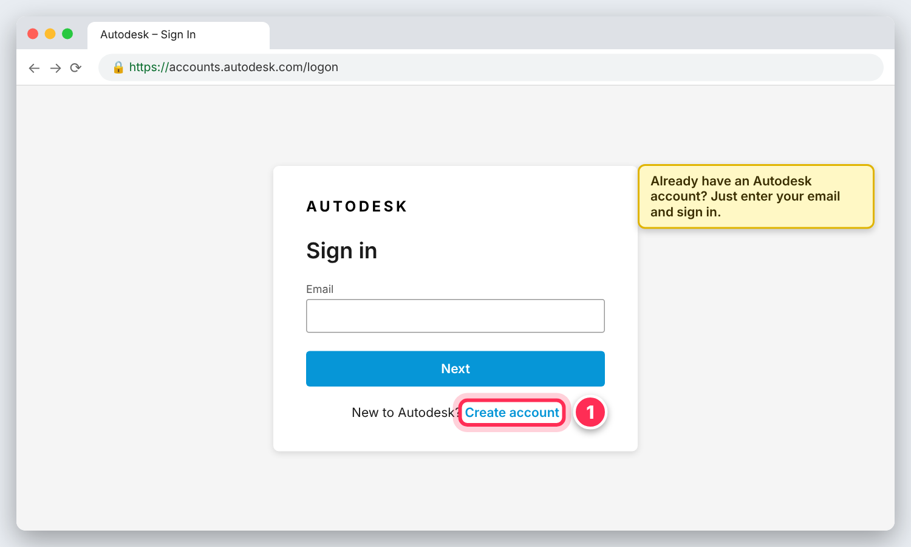
עכשיו ממלאים את הפרטים. חשוב למלא נכון – לפי הפרטים האלה Autodesk תבדוק שאתם באמת תלמידים:

| # | שדה באנגלית | מה לבחור / לכתוב |
|---|---|---|
| 1 | Country, Territory, or Region | Israel |
| 2 | Educational role | Student (תלמיד) |
| 3 | Institution type | Secondary school / High school (תיכון). מכללה – University/Post-secondary |
| 4 | Date of birth | תאריך הלידה האמיתי שלכם |
| 5 | Next | לוחצים להמשך |
במסך הבא ממלאים: First name (שם פרטי), Last name (שם משפחה) – באנגלית ובדיוק כמו באישור הלימודים, Email ו-Password (סיסמה). מסמנים ✔ על הסכמה לתנאים ולוחצים Create account.
Autodesk תשלח קוד / קישור לאימות המייל – פתחו את תיבת הדואר ואשרו.
אימות שאתם תלמידים
Autodesk צריכה לוודא שאתם באמת לומדים במוסד חינוכי. לפעמים זה קורה אוטומטית, ולפעמים יופיע מסך Confirm your education status:

- Educational institution name – התחילו להקליד את שם בית הספר באנגלית ובחרו מהרשימה. אם לא מופיע – נסו שם העיר או כתיב אחר, או בקשו מהמורה את השם המדויק.
- העלאת מסמך – גררו לכאן, או לחצו על browse ובחרו את הצילום של אישור הלימודים.
- לחצו Submit.
❌ מסמך שיידחה: צילום מטושטש, חתוך, תעודת זהות בלי שם בית הספר, או מסמך משנה שעברה.
קבלת אישור במייל
כשהאימות יאושר, יגיע מייל מ-Autodesk Education עם כותרת כמו "You're verified for educational access".
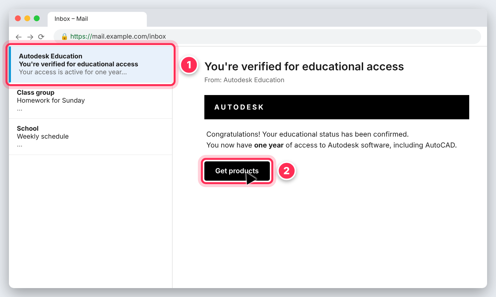
- פתחו את המייל (בדקו גם בתיקיית ספאם / קידומי מכירות!).
- לחצו Get products – או פשוט חזרו לכתובת מהשלב השני והתחברו.
בחירת AutoCAD מרשימת התוכנות
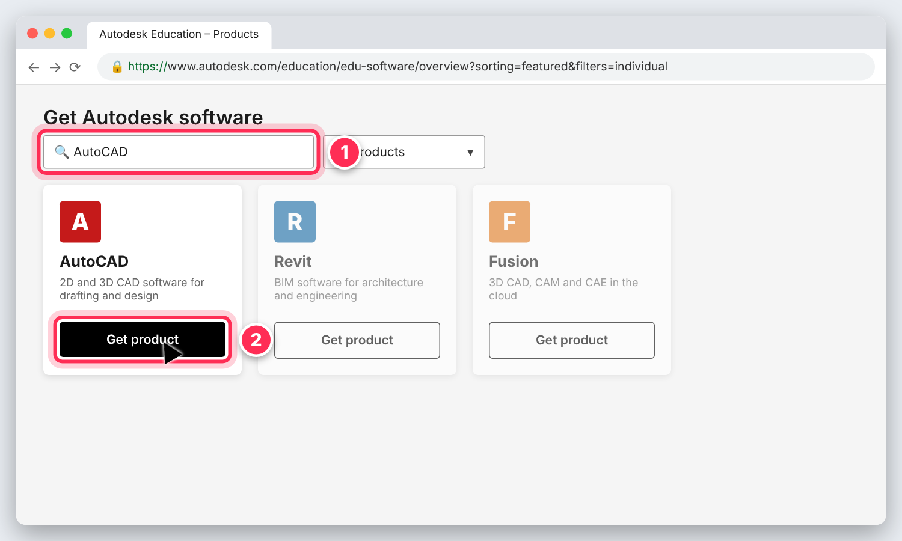
- בשדה החיפוש כתבו AutoCAD.
- בכרטיס של AutoCAD (הסמל האדום עם האות A) לחצו Get product.
בחירת גרסה והורדה
ייפתח חלון קטן עם אפשרויות ההורדה:
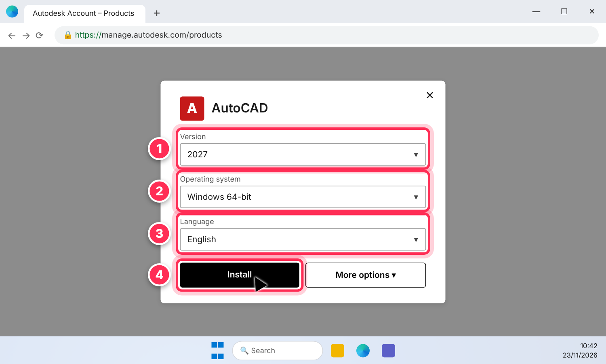
| # | שדה | מה לבחור |
|---|---|---|
| 1 | Version | הגרסה שהמורה ביקש. אם לא נאמר – הגרסה הכי חדשה (המספר הכי גבוה). |
| 2 | Operating system | Windows 64-bit |
| 3 | Language | English – אין גרסה בעברית, וכל ההסברים בכיתה באנגלית. |
| 4 | Install | לוחצים – מתחילה הורדה של קובץ קטן |
הדפדפן יוריד קובץ קטן (בערך 10–20MB) שנקרא משהו כמו AutoCAD_2027_English_win_64bit_installer.exe.

לחצו עליו בחלונית ההורדות (Open file), או פתחו את תיקיית הורדות (Downloads) ולחצו עליו לחיצה כפולה.
ייפתח חלון קטן עם אפשרויות ההורדה. במק התוכנה נקראת AutoCAD for Mac:
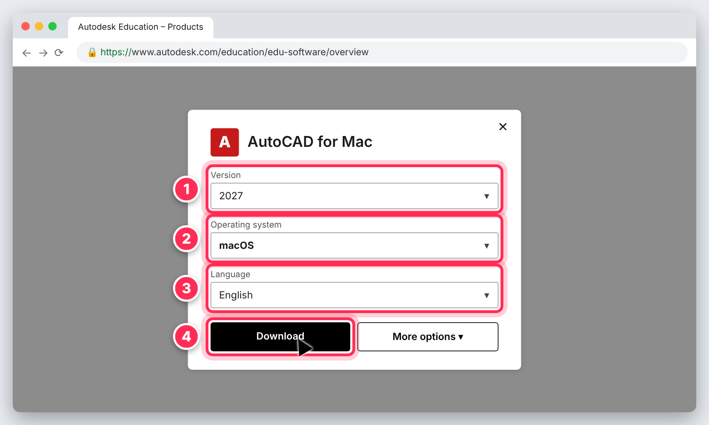
| # | שדה | מה לבחור |
|---|---|---|
| 1 | Version | הגרסה שהמורה ביקש. אם לא נאמר – הגרסה הכי חדשה. |
| 2 | Operating system | macOS – חשוב! לא Windows. |
| 3 | Language | English |
| 4 | Download / Install | לוחצים – מתחילה ההורדה |
יורד קובץ עם הסיומת .dmg (קובץ התקנה של מק). הוא גדול – כמה GB – אז ההורדה יכולה לקחת זמן.
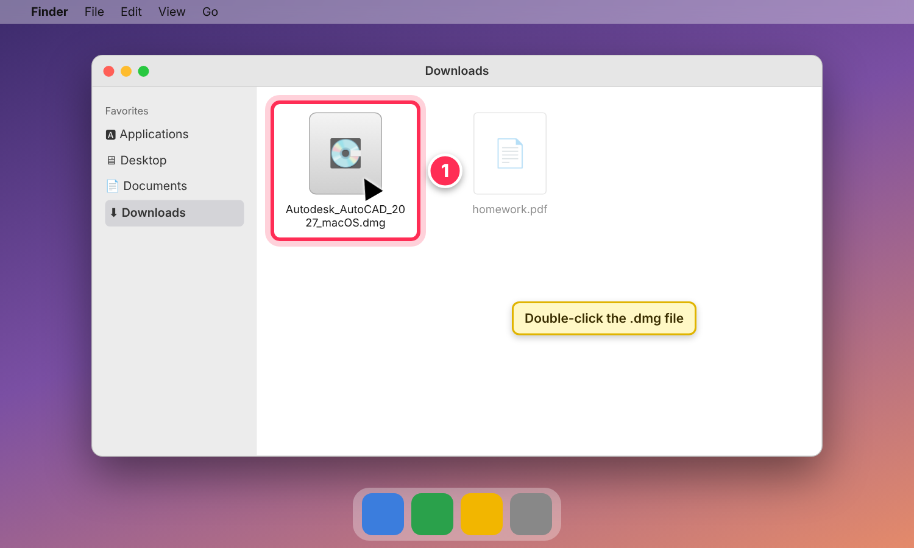
כשההורדה מסתיימת, פתחו Finder ← Downloads (הורדות) ולחצו לחיצה כפולה על הקובץ .dmg.
התקנה
8.1 – אישור הרשאות
Windows ישאל אם לאפשר לתוכנה לבצע שינויים. ודאו שכתוב Verified publisher: Autodesk, Inc. ולחצו Yes / כן.
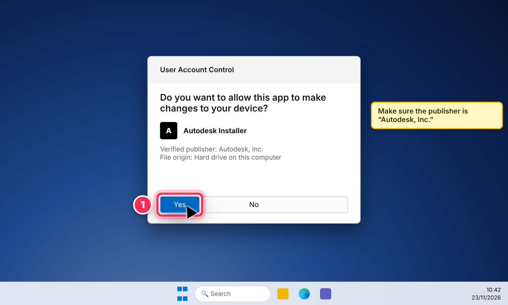
8.2 – הסכמה לתנאי השימוש

- סמנו ✔ I agree to the Terms of Use.
- לחצו Next.
8.3 – מיקום ההתקנה

- השאירו את המיקום הקבוע
C:\Program Files\Autodesk\– לא צריך לשנות. - ודאו שיש מספיק מקום פנוי (Space available גדול מ-Space required).
- לחצו Install.
8.4 – ממתינים…
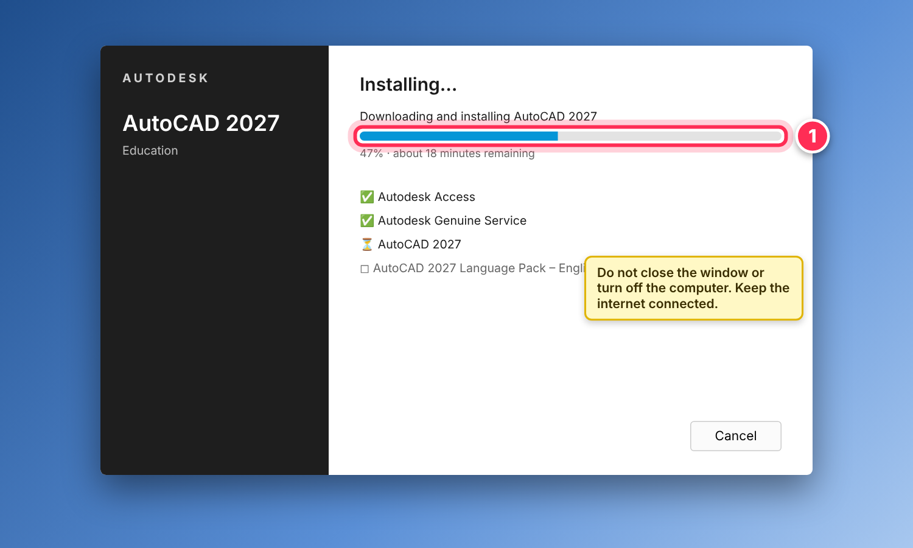
ההתקנה לוקחת בדרך כלל 20–60 דקות, תלוי במהירות האינטרנט והמחשב. בזמן הזה:
- ❌ לא לסגור את החלון.
- ❌ לא לכבות את המחשב או להכניס אותו למצב שינה (במחשב נייד – חברו למטען).
- ✅ אפשר להשתמש במחשב לדברים אחרים, אבל עדיף לא להוריד במקביל דברים כבדים.
8.5 – סיום

כשמופיע Installation complete – לחצו Start. אם המתקין מבקש להפעיל מחדש את המחשב (Restart) – עשו זאת קודם.
8.1 – פתיחת המתקין
ייפתח חלון עם סמל אדום גדול. לחצו עליו לחיצה כפולה: Install Autodesk AutoCAD for Mac.
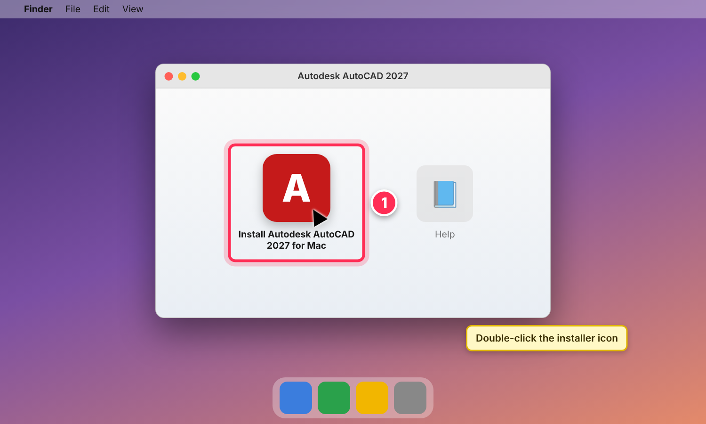
8.2 – אישור פתיחה
macOS ישאל אם אתם בטוחים שרוצים לפתוח תוכנה שהורדה מהאינטרנט. לחצו Open.
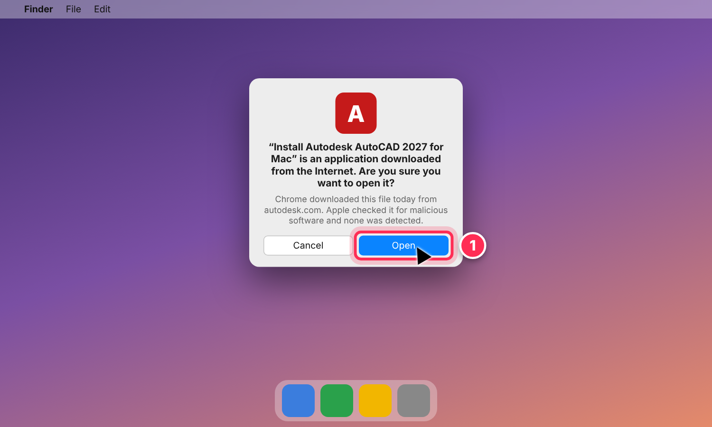
8.3 – סיסמת המק
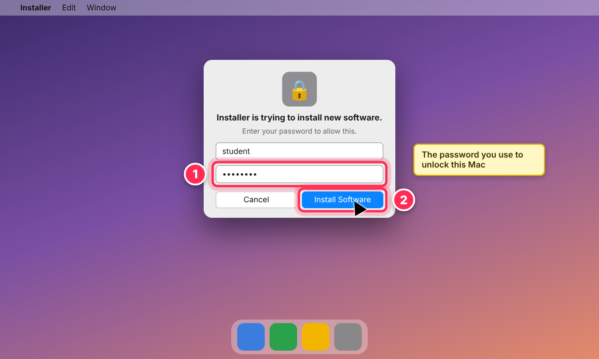
- הקלידו את הסיסמה שפותחת את המק (לא הסיסמה של Autodesk!). במחשבים עם Touch ID אפשר לשים אצבע.
- לחצו Install Software / OK.
8.4 – הסכמה לתנאי השימוש
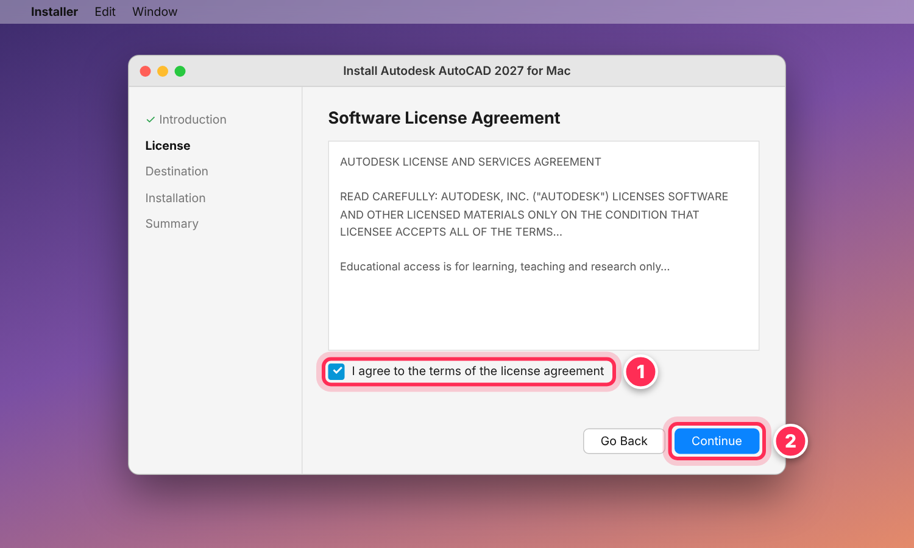
- סמנו ✔ I agree (או לחצו Agree בחלון שקופץ).
- לחצו Continue. במסך הבא (Destination) השאירו הכול כמו שהוא ולחצו שוב Continue / Install.
8.5 – ממתינים…
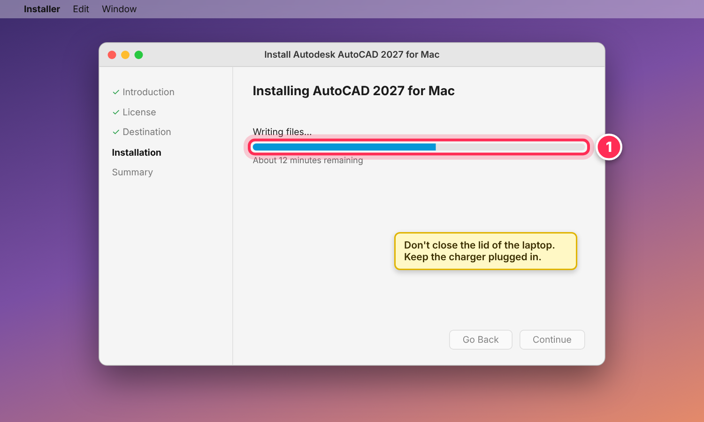
- ❌ לא לסגור את המכסה של המחשב הנייד ולא לכבות.
- ✅ חברו למטען. ההתקנה לוקחת בדרך כלל 10–40 דקות.
8.6 – סיום
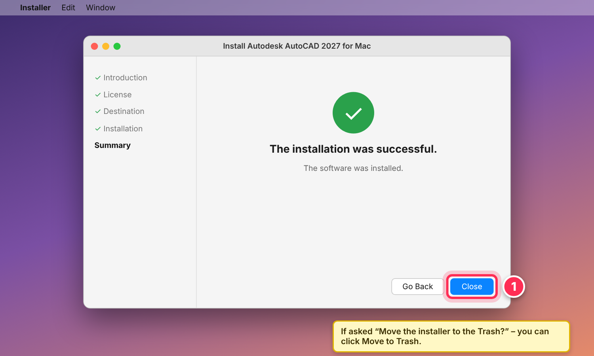
כשמופיע The installation was successful – לחצו Close. אם שואלים אם להעביר את המתקין לפח (Move to Trash) – אפשר לאשר.
הפעלה ראשונה והתחברות
פותחים את התוכנה: Finder ← Applications (יישומים) ← לחיצה כפולה על AutoCAD 2027. אפשר גם ללחוץ ⌘ Cmd+Space ולהקליד AutoCAD.
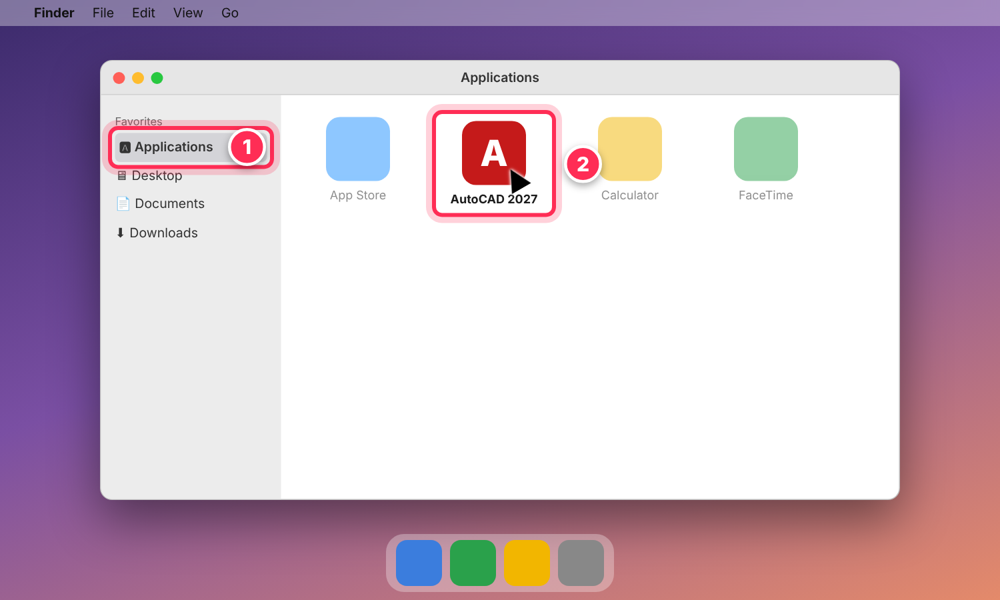
בפעם הראשונה AutoCAD יבקש להתחבר. זה מה שמפעיל את הרישיון החינמי.

- כתבו את אותו המייל שאיתו נרשמתם בשלב 3.
- לחצו Next, הקלידו סיסמה ואשרו.
בפעמים הבאות תמצאו את התוכנה בתפריט התחל או בסמל האדום A על שולחן העבודה.

- לחצו New כדי לפתוח שרטוט חדש.
- בשורת הכותרת כתוב EDUCATIONAL VERSION – סימן שהרישיון החינוכי פעיל. 🎉
אחרי ההתחברות ייפתח מסך פתיחה – לחצו New (או ⌘ Cmd+N) לשרטוט חדש. בכותרת החלון יופיע EDUCATIONAL VERSION – סימן שהרישיון החינוכי פעיל. 🎉
בדיקה – השרטוט הראשון
בואו נוודא שהכול עובד:
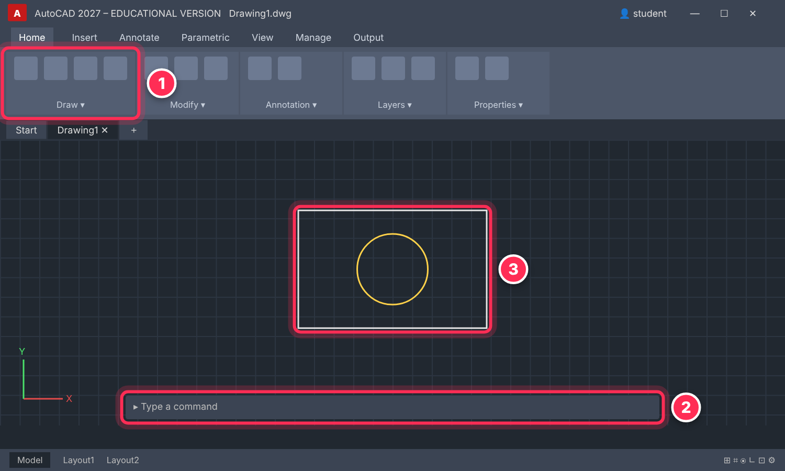
- סרגל הכלים (Ribbon) – בלשונית Home, בקבוצה Draw נמצאים כלי השרטוט: קו, עיגול, מלבן…
- שורת הפקודה – כאן מקלידים פקודות. נסו: הקלידו
RECולחצו Enter, לחצו פעמיים על המסך – נוצר מלבן. אחר כךC↵ ליצירת עיגול. - אם הצלחתם לשרטט – ההתקנה הושלמה בהצלחה! 🎉
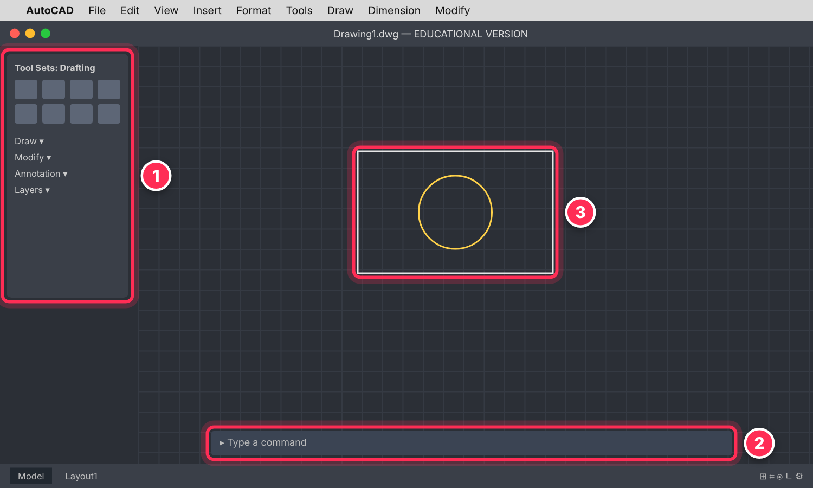
במק המסך נראה קצת שונה מ-Windows – אין "סרגל" למעלה, אלא חלונית כלים בצד:
- Tool Sets – חלונית הכלים בצד שמאל: קו, עיגול, מלבן… (אם לא רואים אותה: תפריט Window ← Tool Sets).
- שורת הפקודה – כאן מקלידים פקודות. נסו: הקלידו
RECולחצו Return, לחצו פעמיים על המסך – נוצר מלבן. אחר כךC↵ ליצירת עיגול. - אם הצלחתם לשרטט – ההתקנה הושלמה בהצלחה! 🎉
✅ סיימתם!
שמרו את הקובץ עם Ctrl⌘ Cmd+S כדי לוודא שגם השמירה עובדת. קבצי AutoCAD נשמרים עם הסיומת .dwg.
הרישיון החינוכי תקף לשנה. כשהוא עומד להסתיים תקבלו מייל – חוזרים לאתר מהשלב השני ומאמתים שוב את הסטטוס כתלמידים.
🛠 תקלות נפוצות ושאלות
לא מקבל/ת את המייל מ-Autodesk
חפשו בתיקיות ספאם, קידומי מכירות ועדכונים. חפשו בתיבה את המילה Autodesk. אם עדיין אין – ודאו שכתבתם את המייל נכון. מיילים של בית ספר חוסמים לפעמים מיילים חיצוניים – אז נסו מייל פרטי.
האימות כתלמיד נדחה
בדרך כלל הסיבה היא מסמך לא ברור או שם שלא תואם. ודאו:
- השם בחשבון (באנגלית) זהה לשם שבמסמך.
- רואים בבירור שם מלא + שם בית הספר + תאריך עדכני.
- הצילום חד, ישר ולא חתוך.
תקנו והגישו שוב. אם עדיין לא עובד – פנו למורה; Autodesk מאפשרת גם למורים לנהל גישה לכיתה.
לא מוצא/ת את בית הספר ברשימה
נסו לכתוב חלק מהשם, את שם העיר, או כתיב שונה באנגלית. אם בכל זאת לא מופיע – בקשו מהמורה את השם המדויק שבו בית הספר רשום ב-Autodesk.
ההתקנה נתקעת / נכשלת באמצע
- בדקו את חיבור האינטרנט והפעילו מחדש את המחשב.
- ודאו שיש לפחות 10–20GB פנויים בכונן Cבמק.
- הריצו שוב את קובץ ההתקנה מתיקיית ההורדות – הוא ימשיך מאיפה שעצר.
- הריצו Windows Update והתקינו עדכונים ממתינים, ואז נסו שוב.
- עדכנו את macOS (System Settings ← General ← Software Update) ונסו שוב.
- אנטי-וירוס חוסם? נסו לנטרל אותו זמנית רק בזמן ההתקנה (ורק כשמורידים מהאתר הרשמי!).
במק כתוב "can't be opened" / "unidentified developer"
פתחו System Settings ← Privacy & Security, גללו למטה ולחצו Open Anyway. ודאו שהקובץ הורד מ-autodesk.com בלבד.
הורדתי בטעות את גרסת Windows (קובץ .exe)
קובץ .exe לא עובד במק. חזרו לשלב 7 ובחרו Operating system: macOS. את קובץ ה-exe אפשר למחוק.
מופיעה הודעה שהמחשב לא תומך / "not 64-bit"
המחשב עם Windows של 32 ביט או ישן מדי. AutoCAD לא יעבוד עליו. אפשר לעבוד ב-AutoCAD Web בדפדפן או במחשבי בית הספר – דברו עם המורה.
התוכנה נפתחת אבל כתוב שאין רישיון / License error
ודאו שהתחברתם עם אותו חשבון שאומת כתלמיד. בתוך AutoCAD לחצו על שם המשתמש בפינה העליונה ← Sign out, ואז התחברו שוב עם המייל הנכון.
התוכנה איטית מאוד
סגרו תוכנות אחרות (במיוחד דפדפן עם הרבה לשוניות ומשחקים). במחשב נייד – חברו למטען. אם יש פחות מ-8GB זיכרון, המחשב פשוט חלש מדי ל-AutoCAD.
זה באמת חוקי וחינמי?
כן. Autodesk נותנת רישיון חינוכי בחינם לתלמידים ולמורים, לשימוש ללמידה בלבד (לא לעבודה בתשלום). קבצים שנוצרים ברישיון חינוכי מסומנים ככאלה.
התמונות במדריך הן איורים להמחשה של המסכים. האתר של Autodesk מתעדכן מדי פעם, כך שייתכן שהמסכים אצלכם ייראו קצת אחרת (צבעים, מיקום כפתורים או מספר גרסה) – אבל שמות הכפתורים והסדר נשארים דומים. Autodesk ו-AutoCAD הם סימנים מסחריים של Autodesk, Inc. מדריך זה אינו רשמי ואינו קשור ל-Autodesk.